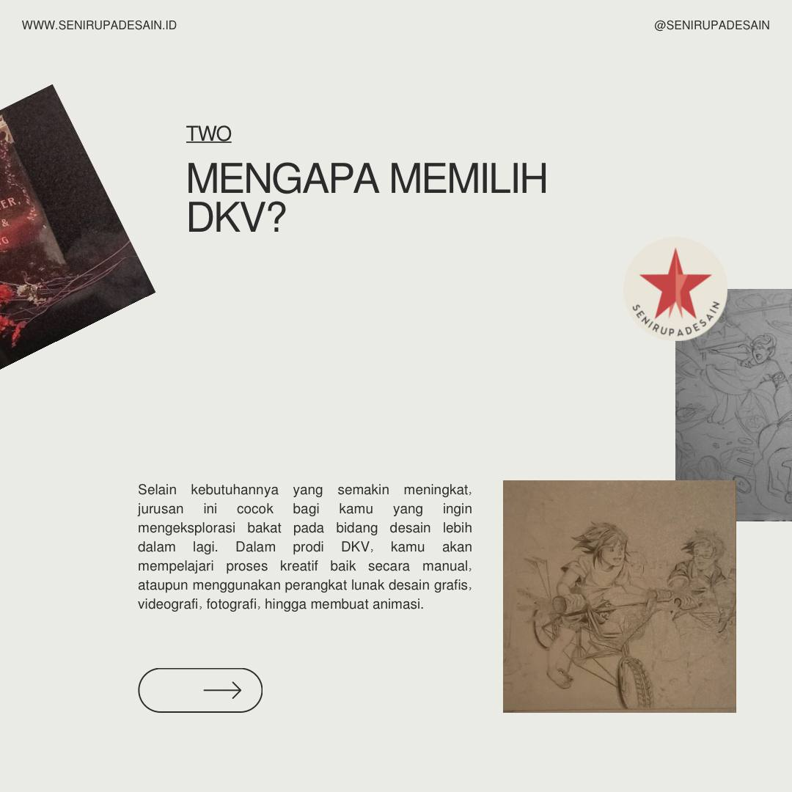
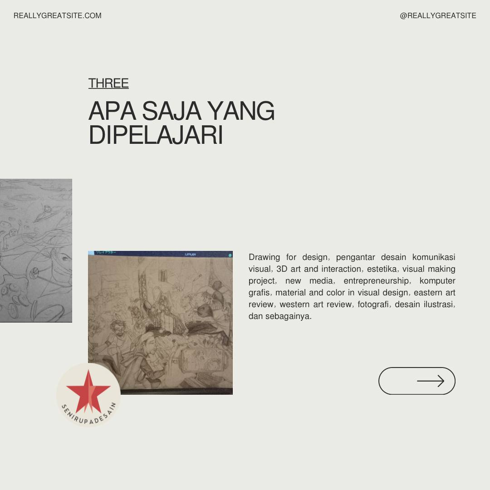

Mengapa Memilih Jurusan Desain Komunikasi Visual (DKV)?
Memilih jurusan Desain Komunikasi Visual (DKV) adalah langkah yang tepat bagi kamu yang memiliki minat yang besar dalam dunia kreatif dan ingin mengeksplorasi berbagai media visual untuk menyampaikan pesan. Jurusan ini menawarkan banyak sekali peluang dan tantangan yang menarik. Berikut beberapa alasan mengapa kamu sebaiknya mempertimbangkan untuk memilih jurusan DKV:

1. Dunia Kreativitas Tanpa Batas
Eksplorasi Media: DKV memungkinkan kamu untuk bereksperimen dengan berbagai media seperti gambar, ilustrasi, tipografi, animasi, video, dan desain interaktif.
Pengembangan Ide: Kamu akan dilatih untuk berpikir kreatif, menghasilkan ide-ide orisinal, dan memecahkan masalah secara visual.
Visual Storytelling: DKV mengajarkan cara menyampaikan pesan secara efektif melalui visual, baik itu untuk tujuan komersial maupun sosial.
2. Peluang Karier yang Luas
Industri Kreatif: Lulusan DKV sangat dibutuhkan di berbagai industri kreatif, seperti periklanan, desain grafis, animasi, game, film, dan media sosial.
Wirausaha: Kamu dapat memulai bisnis sendiri sebagai desainer freelance, membuka studio desain, atau mengembangkan produk kreatifmu sendiri.
Multidisiplin: Keterampilan yang kamu dapatkan di DKV dapat diaplikasikan dalam berbagai bidang, seperti pemasaran, branding, dan user experience design.
3. Pengembangan Diri
Keterampilan Teknis: Kamu akan menguasai berbagai software desain seperti Adobe Photoshop, Illustrator, dan After Effects.
Soft Skills: DKV juga melatih kemampuan komunikasi, kerja sama tim, dan problem-solving yang sangat berguna dalam dunia kerja.
Percaya Diri: Melalui proses berkarya, kamu akan membangun rasa percaya diri dan keberanian untuk mengekspresikan diri.
4. Dampak Sosial
Menginspirasi: Desain yang baik dapat menginspirasi orang lain dan membawa perubahan positif.
Memecahkan Masalah: Desain dapat digunakan untuk mengatasi masalah sosial dan lingkungan.
Membangun Brand: Desain berperan penting dalam membangun identitas suatu merek atau produk.
5. Tantangan yang Menyenangkan
Inovasi: Industri desain terus berkembang, sehingga kamu akan selalu dituntut untuk berinovasi dan mengikuti tren terbaru.
Bersaing Sehat: Lingkungan belajar di DKV biasanya sangat kompetitif, yang mendorong kamu untuk terus meningkatkan kualitas karya.
Belajar Sepanjang Hayat: Desain adalah bidang yang dinamis, sehingga kamu perlu terus belajar dan mengembangkan diri.
Singkatnya, memilih jurusan DKV adalah investasi untuk masa depan yang cerah. Jika kamu memiliki minat yang besar dalam seni, desain, dan teknologi, maka DKV adalah pilihan yang tepat untukmu.
